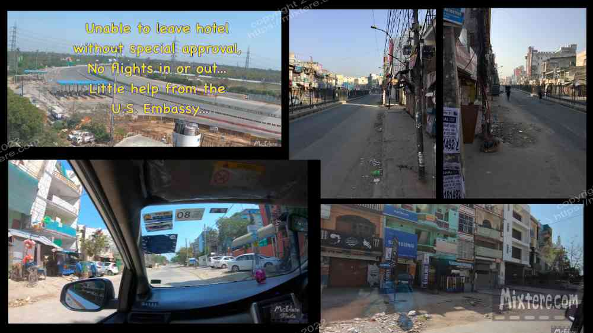
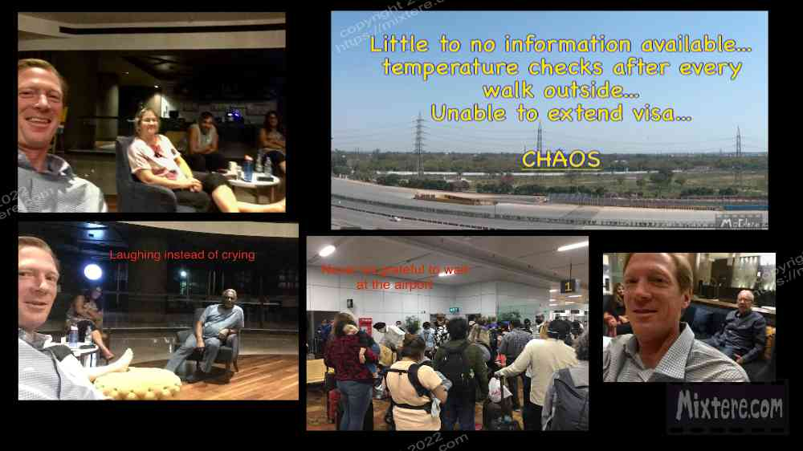

There was no "settling in," but I tried to decompress from the tense taxi ride. As if the stress of the situation had not been enough, two times the taxi driver left his post to replaced by another who tried to demand more money from me. Thankfully I had successfully resisted their extortion attempts. As I mentioned, en route to Delhi I scrambled to make a hotel booking on my phone. I did eventually find a modestly priced place that was close to the airport. And so I found myself at the dumpy hotel. The room had no windows and smelled aspixiatzingly of ammonia cleaner. I tried to count my blessings: health, a safe passage and place to spend the night. I ordered some bland food from the hotel and settled in as best as I could.
The next day a curfew was imposed that prevented people from leaving their residences between 8 am and 9 pm. Food was hard to come by. I got by on whatever snacks I had been toting around in my pack and a few oranges and bananas I had be able to purchase. It was a long and uncomfortable day. When nine pm came around, and curfew lifted temporarily, I shot out to a nearby shop to buy whatever food that I could. I was back on the junk food diet. Curfew continued the next day and time crawled. Again nine o’clock arrived and again I went out to see what I could buy. It was so alarming to see the streets of Delhi so utterly deserted. This was the city that I avoided due to the sensory overload that its so many people and vehicles caused. Now it was as if the town had been hit by a bomb. It was haunting how little life was evident on the streets. The next day the hotel promptly announced that the government had ordered it closed.
I was told that my only option was to go to the Raddison hotel relatively nearby. COVID was turning out to be expensive as well as stressful. I checked the location of the hotel on my phone and opted to walk there. There was such chaos and mismanagement at the hotel, I figured it would be simpler and safer for me to avoid the stress of getting in a taxi, possibly being stopped by police or catching the virus in the car. Police and authorities were heavily monitoring who was out and about. Special permission, often involving paperwork and money paid, was required for cars to be traveling to and fro. I heard that people found to be out without good reason were detained and or beaten. Fear had spread in the land.
By now people were wearing masks religiously. I put one on and having my legitimate reason I walked the twenty minutes to the Raddison with all my gear. It was a surreal survival march. I made great efforts to keep my cool and look like I knew what I was doing. I didn’t. No one did. But I did still have my head screwed on straight and followed the map to my destination. Soon I was at the gates of the behemoth hotel but the gates were closed. Security staff was posted and were screening all who came and went. Great. I had called the hotel ahead of time to ensure vacancy. Once I was vetted at the gate I was eventually granted entry into the compound. My temperature was checked before I was allowed into the hotel. The staff greeted me tensely, took my information and my money and found me a room. I barely settled into the hotel before it was closed by the government. By now rules prevented being out and about on the streets or highways were strictly enforced.
The hotel made arrangements for me and other guests to be shuttled to the Raddison Haryana via a specially permitted car. The car left for the destination, passed through a few checkpoints and pulled into the hotel drive. We all disembarked and went through the procedure of vetting, information collection and temperature checks. We were then given rooms and told that exiting the hotel, even to stroll the parking lot, meant having to have our temperature checked again upon re-entry. By this time there were horror stories about foreigners being found with high temperatures or other symptoms. Behind closed doors they were shut away against their will for long periods of time, often without the basics. The tension all around became so thick it could be cut with a knife.I again tried to count my blessings and have gratitude for the hotel housing me and for the fact that I was still alive. This was what on everyone’s mind. "Were they going to live?" For us tourists it was, "Will I suddenly expire here in India?" People all over the world were struggling with similar questions moment to moment.

There were other travelers stranded by COVID and languishing in the hotel. Some were just tourists, others were business people, missionaries or just people caught in the wrong place at the wrong time. One group of guests had come from England to attended an Indian wedding. Then they had gotten stranded. We all wore the same worried expressions on our faces. We all spoke with the same downhearted tone. We were trapped. A few, especially the Brits, managed to maintain a springiness to their voice. But it was clear they were worried as well. The official news was that the airport was closed and all flights were grounded. This conflicted with the steady movement of airline personnel through the hotel and with the news that spread among the guests that this or that person had been evacuated on emergency repatriation flights by their respective governments.
The tension continued to ratchet up. It was physically palpable all about. It was visible in the strained expressions on people’s faces, especially on those of the hotel staff, who tried a maintain a professional facade. This was normally a four-star hotel, priding itself on hospitality and service. The staff members were trying hard to preserve some semblance of this standard. But the truth was there people were risking their lives to do their job. Many of them had not left the hotel in days if not weeks. They slept where they could and continued doing their duties. Also risking their lives were airline personnel mysteriously lodging on the fourth floor of the hotel. Suddenly parades of them, flight attendants and pilots, would stream through the lobby without any explanation from hotel staff. It was clear that information was being heavily filtered before it was fed to the public. This only reinforced the sense of fear and uncertainty.
I languished in that hotel along with the others for almost three weeks. The experience was that of being a trapped animal in a building that could go up in flames at any moment. It was a challenge to maintain sanity. I, like the other guests, developed some routines to help get by. These consisted of walking around the perimeter of the hotel within its grounds, hanging out with the other guests, drawing, writing, video editing and doing daily internet searches and attempting, in vain, to extend my visa on through the Indian EFRO website. The last two of these routines probably created more stress than they alleviated.
I had bought this cheap drum in Udaipur when the poor shop owner had begged me for a sale. I would take that drum to this cavernous banquet room in the hotel. There I would try to drum away my troubles. It was a surreal scene. Each smack of the drum would echo through the huge room of staged tables and chairs with me as the only witness. Information was not easy to come by on the internet and accessing the government websites to extend my visa was an exercise in futility. The website was overwhelmed, experiencing the equivalent of a DDOS attack from all the other frantic people trying to access it. The most reliable and up to date information came from the other trapped guests.
Some of them stayed up the whole night researching things or trying to arrange passage out of the country. In retrospect I realize that having these people around to relate with probably was the most helpful thing of all. We were not alone in our tenuous, suspended state. We joked with each other and tried to keep our spirits up. Exiting the hotel for a walk on the grounds meant the anxiety of possibly registering a high temperature upon attempted reentry. This was preferable to remaining stagnantly stationary in the echoing halls of the building. That said, I tried not to walk too vigorously. The weather was warm and to prevent registering too high of a temp I tried to rest for a spell after each walk before going through the entry screening procedure.
At the time I was even more social media-avoidant than I am now. But I bit the bullet and created a sort of SOS youtube video. In it I asked for help in getting the US government to send repatriation flights like many other countries were doing. My parents, frantic at my situation, has also begun to work along these lines. They contacted their Senator Harley Rouda and his staff to try to help expedite the state department in arranging flights. I had befriended a British businessman, Adman, that was regularly arranging car trips to the grocery store and then to places to donate the goods he was purchasing to those in need. These poor souls were struggling on the streets and in makeshift camps throughout Delhi. In the car it was nice to get out of the hotel compound although it was eery to drive the empty streets of Delhi. We stopped at a grocery store and their shelves seemed pretty empty. My friend stocked up on what he could in bulk and I bought a few things. I did not have the chance to go with him to the donation sites. I also wasn’t sure that doing this was a good idea. I admired Adman for the risks he was taking and the money he was giving away.

News and government responses to the virus were growing more severe. Many in the Indian public had begun to discriminate against foreign tourists, denying them lodging for food or other services. I read about foreign people in Goa and far flung locations being homeless for a spell as hotel proprietors were paranoid about bringing in the virus. It seemed that similar spells of xenophobia, paranoia and nationalism was also taking place in other parts of the world as well. From my hotel window I watched packs of migrant workers attempting to walk home, sometimes hundreds of kilometers, to their villages. Many of them were still children. Many looked to be traveling on their own with little food, water or support. Trapped in my hotel room, my heart sank looking down at them walking, so isolated, on that highway. I realized that as usual, in India I had things much better than most people did. That did not change the fact that every day I woke with tension that lasted all the way to when I tossed and turned myself to sleep that night. I said a lot of prayers and eventually chose to submit to whatever might happen. That included me possibly dying in India.
At this point I had gotten on a list of people interested in paying to board a state department-arranged repatriation flight. This meant signing paperwork that obligated me to pay over $2600 to the government in case space was found for me on the flight. With my hotel bills and the taxi from Kalath I had long since left behind the goal of budget travel. I did utilize the Zomato food delivery service, which allowed me to avoid costly hotel meals and save about half on food. Every day I would check emails multiple times to see if I was given a seat on an upcoming flight. This went on for about ten days until one day I received my notice. I immediately confirmed it.
The surreal day came for my departure. I thanked the staff and silently said what I hoped would be goodbye to the hotel. The car wove through the streets, stopping at a series of checkpoints along the way. It eventually pulled up and I was never so glad to see an airport. And it was the least busy one I had ever witnessed. There were state department or embassy people assembled in tents along the sidewalk beside the terminal. I noticed a long line of people, the largest assembly of Americans I have ever witnessed in India, slowly inching along a line that led into the terminal. It was a little disorganized but I was struck by how calm the people in line were. I guess, like me, they knew that soon this would be over. At least this leg of it.
Once I checked my bag there was some down-time waiting for the plane. A frantic foreigner approached me asking to use my mobile hotspot. I allowed her to use it to contact a loved one. Then our flight group started heading through the airport to the gate. Due to the circumstances the airport was not operating as usual. There was a good deal of chaos and delay as we walked along, stopped and then began walking again. Soon enough we were boarding the plane. There was excitement in the air. The pilots and staff stepped onto the plane and the crowd erupted with applause and cheers. It still brings tears to my eyes.
Then we were off, headed directly for San Francisco. This halved the time it usually took for me to get home from India. I sat next to a boy and his Mother from Montana. They usually lived in Delhi during the winter but had decided to leave. The boy complimented me on the crude animation I was working on my tablet. Other than this there was not the small talk on the plane that one normally finds. It was apparent that everyone was feeling the tension that I was, even en route out of India. We did not necessarily know what would be waiting for us back in the US. We didn't know if we would be trucked off and quarantined somewhere. In what seemed to be no time the plane landed in San Francisco and we got off. I retrieved my baggage and then went directly to the food court. There I ordered a cheeseburger and a pale ale to celebrate a successful return. Then I made my way to a connecting flight back to Laguna Beach.
My parents were thrilled to see me but we had to maintain a physical distance. I was supposed to quarantine for ten days. After all that I had gone through this mentally messed with me. I could not even relax at home. The worst was that I could not visit with Louie the golden retriever, my best friend in the whole world. He wanted to visit with me but I did not want to pass on anything I might have through him to my aged parents. Louie of course did not understand. He sat on the porch outside my door for the better part of that week. Soon I was able to pet him and I tried to explain to him what was happening and why I had been out of reach. He didn’t hold a grudge. I sat in the garden with him and tried to absorb all that had happened. For whatever reason, predetermined or good luck, I had been shuttled through a number of jams and had remained intact. I still wonder today how and why that is. The world lost a lot of people to COVID. I find myself wondering what I am to do on earth now that I have survived.
My parents were thrilled to see me but we had to maintain a physical distance. I was supposed to quarantine for ten days. After all that I had gone through this mentally messed with me. I could not even relax at home. The worst was that I could not visit with Louie the golden retriever, my best friend in the whole world. He wanted to visit with me but I did not want to pass on anything I might have through him to my aged parents. Louie of course did not understand. He sat on the porch outside my door for the better part of that week. Soon I was able to pet him and I tried to explain to him what was happening and why I had been out of reach. He didn’t hold a grudge. I sat in the garden with him and tried to absorb all that had happened. For whatever reason, predetermined or good luck, I had been shuttled through a number of jams and had remained intact. I still wonder today how and why that is. The world lost a lot of people to COVID. I find myself wondering what I am to do on earth now that I have survived.
In time I completed my quarantine but it was obvious that life would never be the same as before COVID. In India, when the virus hit I was essentially told to “go home.” But I had given up whatever semblance of a home and work that I had in order to embark on the adventure. The movement of launching on this adventure set me in a sort of limbo, in between homes. In many ways I have been searching for a home since leaving my birthplace at age 6.
I'd like to thank The Radisson Gurugram for housing me and my family for working so hard to get me home. I owe very special thanks to Matt Jackson, then assistant to Senator Harley Rouda, for putting in the effort and late hours to help me get on that United Airlines repatriation flight. I have thanked him personally but the world should also know his excellent character. I would also like to thank the staff of that flight, for risking their lives to get us home. Equally importantly, I would like to thank the United States Department of Transportation, who at my request forced the hands of British Airways to refund me for the flight they charged me for, canceled and then did everything they could to prevent refunding me for. Lastly I would like to thank you for coming along reader.
Four years have passed since this part of the tale concluded. The journey that is Beans’ Bodh Gaya and Beyond continues. There have been many experiences had, some joy, and always much difficulty. I have gone to many places and seen many things. I floated to Oakland, then San Francisco, then Oakland again, then Sonoma county, then abroad, then stateside, then abroad again. I have not still not found proper employment or readjustment to life in the States. I continue to seek and move about, searching for my home and place in the world. In the future I hope to post more content of the experiences and insight had
I have given up on completing this project many times, mostly due to technical frustration or sheer exhaustion of reliving it all. But now it seems that I am finally am nearing completion. I feel that many will benefit from knowing the perspective I have shared here; that of an honest person taking risks in pursuit of truth and happiness. It has meant a lot to be me to be able to speak my voice here and to offer it to you. Thanks for coming along the ride. If you feel compelled, write at the email below.